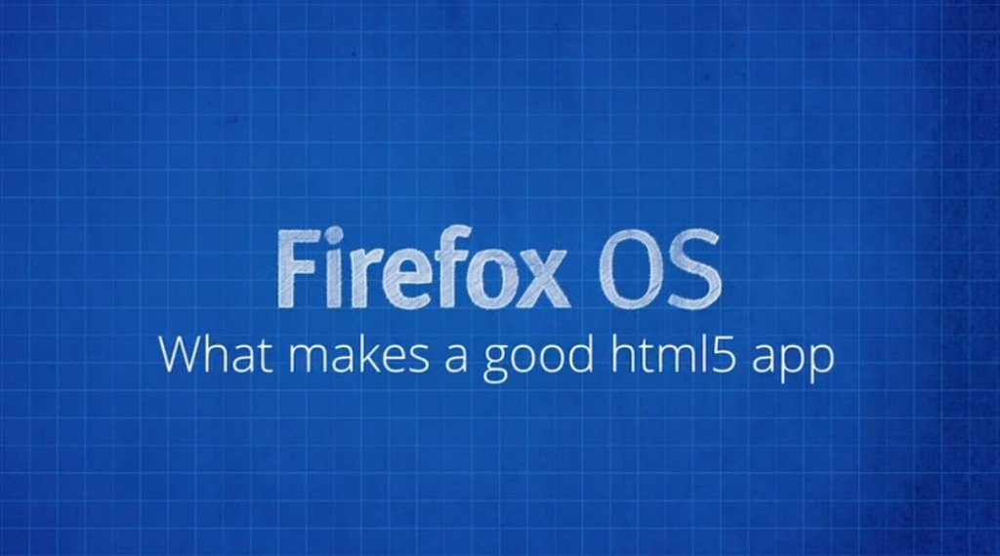

你是熱血的開發者，而且早就想開發自己的 Firefox OS App 嗎？在《Firefox OS App 開發入門 ─ 引言》之後，這裡正式為大家帶來 Firefox OS App 系列影片之一：打造絕佳 HTML5 App 的要素 (中文字幕)。快來觀賞影片並讓自己儘快熟悉 Firefox OS，進而順利開發 App 吧！

不只是網站
Firefox OS App 就是 HTML5 App；其所使用的技術本質上也與網站技術相同。你可以先寫個網站，再提供 manifest 檔案 (你也會在「應用程式管理員 App Manager」看到中文翻譯為「安裝資訊檔」；可參閱《App manifest》進一步了解) 即可將網站轉為 App。這個動作就等於告知 Firefox OS 你在撰寫 App，並可讓你：
- 能把 App 發佈到 Marketplace 上
- 可存取裝置的硬體，蒐集如地理位置資訊 (Geolocation) 與裝置方向 (Device Orientation) 等資訊
- 還有更多功能！
HTML5 App 其實是透過網站強化其功能，也同樣遵循相同的規則，如：
- 「Progressive enhancement」，亦即先撰寫可用的配置，再視情況套用適合的版面。
- 因應當前的執行裝置環境。如透過 media queries 與 responsive images 而最佳化 App，已配合不同的螢幕尺寸、解析度、可用網路的速度等。
- 採用 HTML、CSS、JavaScript 作為其核心技術。
若要將網頁轉為絕佳的 App，其中的差異就在於開發者就必須考量到行動裝置使用者。也代表 App 首先必須要能：
- 在讓使用者進行某個作業之餘，也要提供可輕鬆使用的介面
- 妥善利用有限的電池容量、處理器的速度、可用的螢幕空間而能盡情把玩 App
在大多數的情況下，開發者必須稍微讓網頁「瘦身」並簡化介面。而使用者也確實能因此獲得更好的經驗。
若要進一步設計出絕佳的 HTML5 App，可參閱 MDN 上的《應用程式中心》相關文章。
看完影片，你是否對 Firefox OS App 有更深入的了解呢？請別錯過即將陸續發佈且完成中文化的系列影片。
你也可以直接觀賞 MDN 上的原文系列影片《Screencast series: App Basics for Firefox OS》。
亦可欣賞中文版的《系列影片：Firefox OS App 開發入門》。我們將逐一完成影片的中文化，並隨時更新各影片所對應的文章內容。